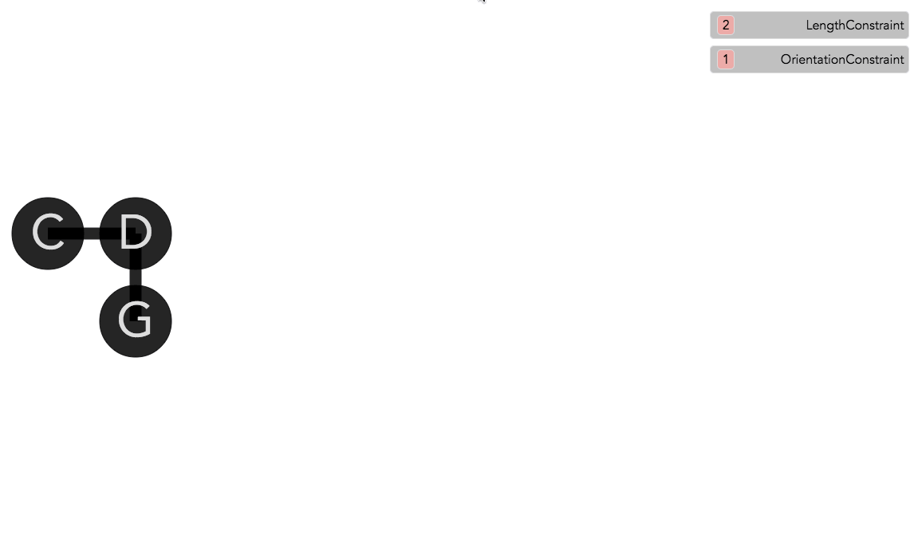

So far we've been using a predefined set of data and constraint classes. It is possible to view and edit the class definitions using the class browser. For example, in the figure below we click on the constraint type LengthConstraint to get its listing of method definitions:
|  |
Viewing and Editing the constraint type definition |
All the predefined constraints have a defined a few methods implemented and if the user wants to define a new constraint type they must be implemented as well. For constraint types the most important variables and methods are shown on the top:
-
propertyTypes: gives a type to the properties, enabling type-checking UI features.
-
computeError: is a function that given the current pseudo-time of the system (some constraints are temporal) as well as the state of the properties of the constraints, returns a numeric error value as an indicator for how close the state is from a solution (depends on epsilon, a parameter that sets this threshold).
-
solve: which the system calls once it deems the error too high (thus constraint unsatisfied). This function returns a dictionary object as a solution to the constraint. This solution is essentially interpreted as a set of patches to the current state, indicating the set of variables that need to be changed and the values they need to be changed to. The set of patches are organized as a dictionary where the keys are the names of the property objects belonging to the constraint (e.g., in the LengthConstraint they are called p1 and p2) and the values are themselves dictionaries, mapping the name of a property beloning to an object to a new value.
The same thing goes for object (data) classes. There are a set of mandatory methods that the class must define.